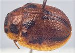
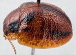
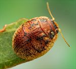
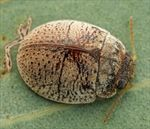
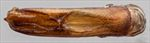
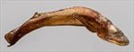
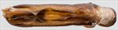
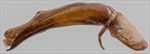
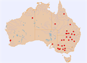

Click on images to enlarge

Male, Lake Cullulleraine, Victoria [2019-091]

Male, Perth, Western Australia [2017-279]

Female, Nathalia, Victoria [2025-021a]

Male, Walgett, northern N.S.W. [2024-087]

Aedeagus, dorsal view (Halls Creek, N.W. Western Australia, 2007-223)

Aedeagus, lateral view (Halls Creek, N.W. Western Australia, 2007-223)

Aedeagus, dorsal view (Nyngan, New South Wales, 2024-096a)

Aedeagus, lateral view (Nyngan, New South Wales, 2024-096a)

Distribution
Ta10
Name
Trachymela sp. Ta10
Reference specimen
25-052408, Hay, Southern NSW.
Adult Description
Length: ♂ 4.5–5.6 mm (n=31), ♀ 5.2–5.8 mm (n=28).
Colouration:
Head: light- to mid-brown, usually with a pair of black patches behind fronto-clypeal suture, one on each side between eye and central suture that is very variable in size, sometimes large and even merging across central suture, rarely completely absent, dark-brown or black-tipped mandibles; antennomeres uniformly straw-brown.
Pronotum: brown, concolorous with head, with two prominent quadrate black patches almost invariably present, situated one on each side between eyes and humeral callus, sometimes these patches are not black but of a darker brown than rest of surface, rarely are they completely absent.
Scutellum: brown, concolorous with pronotum.
Elytra: brown, concolorous with pronotum, with prominent black or dark-brown areas usually present along the border of elytral disc and margin and in a broad band from anterior elytral margin just above humeral callus to around elytral summit, the black shade in these areas may be confined to raised features such as verrucae or extend to the surrounding elytral surface or rarely be completely absent; wart-like elevations and ridges elsewhere on the elytra may also be darker than background; punctures are concolorous with or a slightly darker shade than interstices, humeral callus usually darker than surrounding area.
Venter & Legs: light- to mid-brown with metaventrites usually darker in shade, at least laterally, inside surface of elytral epipleura brown.
Cuticular Wax: mostly of a uniform light brown colour, with a small lighter-coloured patch at anterior edge of each elytron adjacent to scutellum; distribution is relatively even though elevated areas such as verrucae and ridges tend to be wax-free.
Morphology:
Head: punctures moderately large (pd ≈ 1.5–2× ef) and slightly unevenly and densely packed. Antennae short, particularly in females (AL/BL: ♂ 36–41%, ♀ 31–32%), filiform.
Pronotum: almost evenly curved transversely, foveal depression absent with epidermis often slightly elevated in a small pustule behind eyes, discal area with surface somewhat uneven and puncturation clearly to more vaguely impressed, evenly to slightly unevenly distributed and relatively dense (spacing ≈ 2–3 pd), becoming much more coarse at lateral margins. Front margins join lateral margins in a smoothly rounded right-angle, with lateral margin initially straight before curving smoothly and gradually towards rear margin, broadest just in front of posterio-lateral angle.
Scutellum: punctured, with punctures similar or better defined than on pronotum, evenly or unevenly distributed.
Elytra: surface evenly to slightly unevenly curved, punctures distinct and relatively large, closely spaced and evenly distributed over anterior two-thirds of surface, surface more granular in posterior third, with much smaller punctures scattered on the interstices, a thin, sometimes partially interrupted elevated ridge runs transversely from elytral summit to middle of edge of disc with elytral surface vaguely depressed just anterior to it, many small elevated verrucae are scattered about the surface primarily posterior to the central ridge, sometimes vaguely aligned transversely or longitudinally, surface continuous under humeral callus. Vertical extension of epipleura considerable (HCE/PW = 0.40–0.42).
Venter: prosternal process almost parallel, lightly closed anteriorly, a sparse scatter of setae present along prosternal process and on mesoventrite, a single long seta present on median and posterior trochanters, usually one, rarely 2 or 3 on anterior trochanters; front edge of metaventrite beveled, slightly rounded; inner edge of posterior of epipleurae lacking setae.
Male Genitalia (Aedeagus):
Dimensions: long (LPE/BL = 37–44%), linear, thin (WPE = 0.2 × LPE).
Dorsal view: in dorsal view, approximately parallel-sided from basal section to close to apex from where sides converge smoothly towards apex, tip triangular and quite broad, lateral surface just posterior to ostium is extended upwards as two small triangular processes (dorsal flanges) that project dorsally in fresh specimens, but are generally folded across the dorsal surface in preserved specimens, with their apices overlapping to form a bridge across dorso-median channel, dorsal ostial processes extend forward from these to about level of tip, dorso-median channel relatively broad and shallow, but short, ostium large, oval.
Lateral view: in lateral view, central half almost linear, with both basal section and apex from posterior of ostium bending downwards slightly, tip slightly deflexed.
Immature Stages
Unknown.
Similar species
Ta61: this slightly larger species tends to be slightly darker than Ta10 overall, with the black markings on the head usually being more transverse and extending towards the central part of disc (though not meeting). The raised transverse ridge in the centre of the elytron tends to be more pronounced and is rarely interrupted in Ta61. Ventrally, Ta61 is usually darker, in particular the prosternum is often dark-brown or even black. The aedeagus lacks dorsal flanges.
Ta95: this species seems to be confined to the Flinders Ranges. It lacks the black markings on the head, and the black markings on the elytra, though in the same position of those of Ta10, are usually much reduced or absent. The verrucae are slightly different in nature to those of Ta10, being slightly expanded longitudinally and this can produce a wrinkled appearance to elytra. The aedeagus is very different to that of Ta10.
Ta96: individuals of this species are larger than those of Ta10 (there is only a very small overlap in the size distributions). They tend to be very similar in the dorsal colouration of the head and pronotum to typical specimens of Ta10 (with black patches invariably present), but usually have a much smaller extent of black on the elytra. The transverse ridge on elytra is often more poorly defined than that of Ta10, while the posterior verrucae are smaller and invariably concolorous with the derm. The aedeagus lacks dorsal flanges. It likely has a broad distribution in central Australia, with specimens from Boulia (Qld) and the Flinders Ranges.
Ta104: individuals of this species are slightly larger than those of Ta10, and the central transverse ridge is not as clearly defined over its full length. Otherwise, they are very similar in the positions of the black markings. The aedeagus is very different.
Ta114: very similar in colouration to Ta10, but with the exception of some faint dark colouring in the posterior half, the species does not have dark markings along the edge of the elytral disc. The verrucae are also slightly different to those of Ta10, tending to be more transverse and wrinkle-like. Ventrally, Ta114 is completely light brown. Individuals of Ta114 are usually slightly smaller than those of Ta10, and the aedeagus is similar to that of Ta10 in shape but lacks dorsal flanges.
Notes
Taxonomy: There are several species of Trachymela that have a central transverse weal on the elytra and the same pattern of colouring typical of Ta10. However, the identification of a specimen of Ta10 from Hay (southern New South Wales) as T. bicolora (Blackburn) by B.J. Selman is likely to be incorrect (see discussion under T. bicolora). The specimens from Western Australia are essentially identical morphologically, including the structure and size of the aedeagus. The type specimen of T. nervosa (Clark) described from SW Western Australia is very similar in sculpture and markings to a typical Ta10, although it is just slightly larger (6.1 mm, carded specimen, sex unknown), and is more likely to be one of the other species in this group with a central transverse weal.
Distribution & Abundance: Widely distributed in the drier parts of Australia, west of the Great Dividing Range, and is also found in south-western Western Australia.
Host Associations: The hosts recorded for this species are overwhelmingly in the box-group (Symphyomyrtus: Adnataria) of Eucalyptus, including E. coolabah (n=18), E. largiflorens (n=10), E. populnea (n=1), and E. intertexta (n=2). Other recorded associations are E. camaldulensis (n=2), E. crebra (n=1), and an unspecified ironbark. Specimens from Western Australia were caught from E. rudis (n=4), a member of the red gum group (Symphyomyrtus: Exertaria) closely related to E. camaldulensis.
Morphological Variation: Typically, specimens display the black markings on head, pronotum, and elytra described above, but some specimens are almost uniformly light- to mid-brown in colour and these specimens also do not have any black colouration ventrally. The aedeagus of Ta10 is quite unique within the genus in having a pair of roughly triangular dorsal ostial processes just anterior to the centre. These are oriented dorsally and roughly parallel in freshly dissected specimens but tend to curve inwards and meet at the tips as the dissected organ dries out. Though placed with this species for the moment, specimen [2007-089] from Boulia, Queensland, is very possibly different; its elytral sculpture is quite different, with many short transverse ridges, while the aedeagus is of the same shape, but just a little shorter than that of Ta10.
Copyright © 2026. All rights reserved.
![Male, Lake Cullulleraine, Victoria [2019-091]](assets/image/Ta10/Ta10_A19-091d.jpg){kind=link}
![Male, Perth, Western Australia [2017-279]](assets/image/Ta10/Ta10_A17-279_(A).jpg){kind=link}
![Female, Nathalia, Victoria [2025-021a]](assets/image/Ta10/Ta10_A25-021b_SM.jpg){kind=link}
![Male, Walgett, northern N.S.W. [2024-087]](assets/image/Ta10/Ta10_A24-087_SM.jpg){kind=link}
{kind=link}
{kind=link}
{kind=link}
{kind=link}
{kind=link}